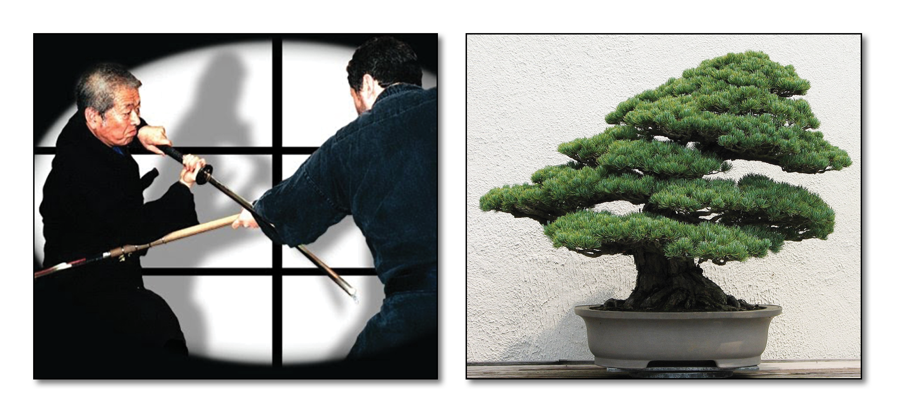

"High Tree, Raised Heart School" - Dr. Hatsumi is the 17th Soke
There are seven levels of Takagi Yoshin Ryu:
Shoden no Kata - 14 techniques
Chuden no Sabaki Gata - 10 techniques
Chuden no Tai no Gata - 15 techniques
Okuden no Kata - 15 techniques
Eri Shime Gata - 8 techniques
Moguri Gata - 11 techniques
Daisho Sabaki Gata - 14 techniques
Characteristics:
Most famous in the Bujinkan as a "Bodyguard School" with fast and effective jujutsu techniques, and daishosabaki (jujutsu while wearing both swords in the belt). Other techniques are based around bojutsu. It has been mixed with sumo techniques, Takenouchi Ryu jujutsu and others. Takagi Yoshin Ryu has been handed down together with Kukishinden Ryu for gener
ations. The Takagi Yoshin Ryu uses many techniques that appear similar to judo or aikido, but goes further in that when the techniques are applied it's made difficult for the opponent to escape by rolling or breakfalling.
These are very close quarter techniques with the opponent held close - a result of the techniques being developed in buildings. Students are taught to use speed, look the opponent in the eyes and use their impulse and weight. Also translated as "Heart of the Willow Tree School".
Brief History:
The school was founded in the beginning of the 1600s by Takagi Oriuemon Shigenobu. He was chief instructor of swordsmanship at Shiraishi castle in Oshu (present day Tohoku region), having mastered Takenouchi Ryu Jujutsu, Yoshin Ryu Kodachi, and Kenko Ryu Sojutsu. Takagi Oriuemon also founded Hontai Yoshin Ryu and both can trace their origins back for 18 generations. "In Takagi Yoshin Ryu, look at the eyes and use speed."
The History of Takagi Yoshin Ryu Jutaijutsu:
In 1569, during the Yeiroku Era (1568-1579), in the Funagata Yama area of Miyagi, lived a mountain priest from the Abe family called Unryu (Cloud Dragon). The Bugei Ryu-ha Daijiten gives his name as Sounryu. He was an expert in shuriken, bojutsu, yari, naginata and taijutsu from the Amatsu Tatara Rinpo Hiden Makimono. The Amatsu Tatara scroll was kept by the Abe, Nakatomi, Otomo, and Monobe families. Takamatsu Sensei's family also posessed a copy, through their blood relation with the Kuki family. Unryu taught his system to Ito Sukesada, a famous martial artist in his day (1570). He was a samurai from Katakura Kojuro in the Fukushima Province. He added hanbo, kenjutsu and kodachi to the teachings of Unryu. He taught the techniques that would later become Takagi Yoshin Ryu to Takagi Oriuemon Shigenobu, a young samurai from the Tohoku-Shiroishi Han in Oku (a northern part of Japan). He was born on April 2nd, 1625, and died on October 7th, 1711. He was given menkyo kaiden when he was just 20 years old. On the 15th of August, 1695, he was made a shihan of up to six different martial arts of the Imperial bodyguard by the Emperor Higashiyama.
He revised, improved and expanded the techniques that he learned from Ito, and put them together into what he called Takagi Yoshin Ryu, naming it after himself. He studied hard to improve himself for the purpose of avenging his father's murder. His father had gifted him with the teaching "A willow is flexible, but a high tree is breakable". The style has been called many things throughout its history, including Jutaijutsu, Jujutsu, and Dakentaijutsu. It has been heavily influenced by Takenouchi Ryu Jujutsu, and Kukishin Ryu. In the 17th century, the soke of Takagi Yoshin Ryu, Takagi Gennoshin Hideshige, and the soke of Kukishin Ryu, Ohkuni Kihei Shigenobu, fought a friendly match, and became close friends. The two systems exchanged information, and even became restructured as a result. The two systems passed down through history very close to each other.
The style came to Toshitsugu Takamatsu through Yoshitaro Tadefusa Mizuta in August of 1908, and to Masaaki Hatsumi in May of 1959. When applied, the techniques of Takagi Yoshin Ryu go farther than those of Judo or Aikido, making it impossible to roll or breakfall. The throws are intended to break the shoulder or neck of the opponent.
"Soft like cotton, hard like lightning; courage to win against ten thousand men"
"A willow is flexible, but a high tree is breakable".
Soke of Takagi Yoshin Ryu:
Unryu
Ito Kii Sukesada
Takagi, Oriuemon Shigenobu - b. 1625 - d. 1711
Takagi, Umannosuke Shigesada - b. 1655 - d. 1746
Takagi, Gennoshin Hideshige - d. 1702
Ohkuni, Kihei Shigenobu - Genroku era (1688)
Ohkuni, Yakuburo Nobutoshi
Ohkuni, Tarodayu Tadanobu
Ohkuni, Kihei Yoshisada
Ohkuni, Yozaemon Yoshisada
Nakayama, Jinnai Sadahide
Ohkuni, Takezaemon Hidenobu
Nakayama, Kaemon Sadasaka
Ohkuni, Kamahura Hidetoshi
Yagi, Ikugoro Hisayashi - Tempo era (1830-1844)
Fujita, Fujigoro Hisayoshi
Mizuta, Yoshitaro Tadefusa
Takamatsu, Toshitsugu Uoh - b. 1887 - d. 1972
Hatsumi, Masaaki - b. 1931 -